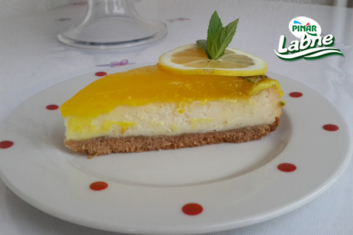
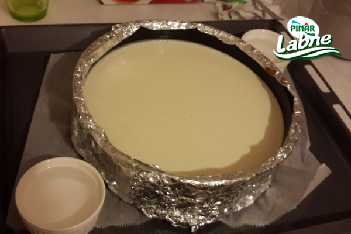

Limonlu Cheesecake Nasil Yapilir?
- Bisküvileri rondodan geçirelim.
- Erimiş tereyağını ekleyelim kelepçeli kalıbın tabanına yayalım
- Elimizle bastıralım ve dolaba atalım
- Kreması için, labne ve çiğ kremayı çırpalım.
- Yumurta, şeker ilave edip un ve nişastayı ekleyelim.
- Son olarak vanilya ,1 limon rendesini katalım.
- Dolaptan çıkardığımız bisküvinin üzerine dökelim.
- Fırına koymadan önce kalıbın kenarlarına folyo kaplayalım. kenarlarının çok kızarmaması için
- Üzerininde çatlamaması için fırına dayanaklı 2 küçük kase ile su koyalım.
- 160 derecelik fırında 1 saat pişirelim ve soğumaya bırakalım.
- Üzerinin sosu için tüm malzemeleri karıştırıp muhallebi gibi pişirelim.
- İlk sıcaklığı çıkınca kekimizin üzerine dökelim.
- 1 gece dolapta dinledirilirse daha iyi olur istediğiniz gibi süsleyebilirsiniz
Afiyet olsun.
